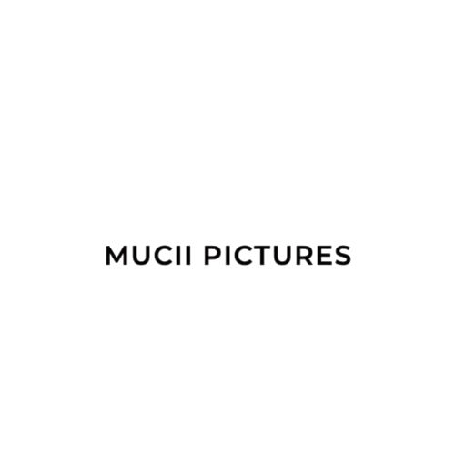

Strategic Collaborations
Return to the Source represents a unique convergence of cultural institutions, funding partners,
and creative organizations working together to advance African cinema and historical memory.
 Funding Partner
Funding Partner
The Mastercard Enablement Programme provides crucial funding and strategic support,
enabling the realization of our vision for transformative cultural programming.
Key Contributions
- Core funding for the 5-day film lab program
- Strategic partnership development
- Capacity building initiatives
- Regional network expansion
 Strategic Partner
Strategic Partner
Goethe-Institut Namibia brings institutional expertise and cultural diplomacy experience,
facilitating meaningful dialogue between German and Namibian histories.
Key Contributions
- Venue provision and logistical support
- Cultural diplomacy facilitation
- International network connections
- Historical context expertise
 Production Partner
Production Partner
Old Location Films contributes essential production expertise and local knowledge,
ensuring authentic representation of Namibian narratives.
Key Contributions
- Production coordination and expertise
- Local crew and talent sourcing
- Post-production facilities
- Cultural consultation services

Lead Organization
Mucii Pictures serves as the coordinating entity, bringing together diverse stakeholders
and ensuring the successful execution of our shared vision.
Key Contributions
- Program coordination and management
- Creative development and curation
- International filmmaker recruitment
- Fund management and compliance